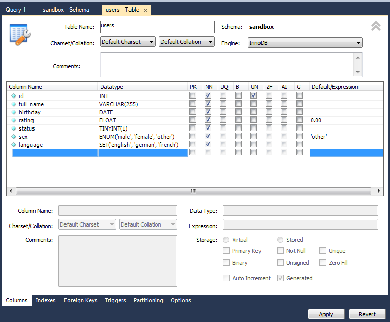

Создание базы данных
MySQL Workbench / SCHEMAS / Пр.кн. / Create Schema :
• Schema name - имя базы данных
• Apply
◇ CREATE SCHEMA `sandbox` ;
• Apply
Создание таблиц
SCHEMAS / sandbox / Tables / Пр.кн. / Create Table - создаем поля таблицы

Apply
Отобразится DDL-запрос:
CREATE TABLE `sandbox`.`users` (
`id` INT UNSIGNED NOT NULL,
`full_name` VARCHAR(255) NOT NULL,
`birthday` DATE NOT NULL,
`rating` FLOAT NOT NULL DEFAULT 0.00,
`status` TINYINT(1) NOT NULL,
`sex` ENUM('male', 'female', 'other') NOT NULL DEFAULT 'other',
`language` SET('english', 'german', 'french') NOT NULL);
Apply
Посмотреть DDL-запрос для создания таблицы:
1 вариант: SCHEMAS / sandbox / Tables / users / Пр.кн. / Table Inspector / DDL
2 вариант: SCHEMAS / sandbox / Tables / users / Пр.кн. / Send to SQL Editor / Create Statement
Экспорт базы данных
Data Export / Выбираем базу данных и таблицы / Start Export
Изменить созданные таблицы
SCHEMAS / sandbox / Tables / users / Пр.кн. / Alter Table